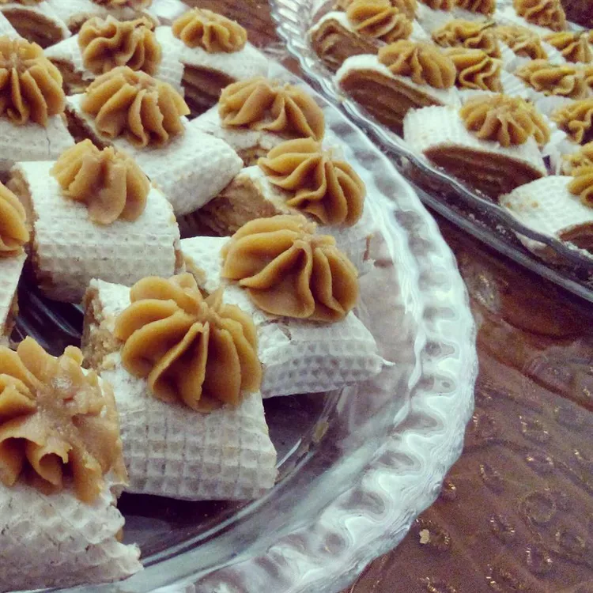

Persian Halva

Description
Halva is a favorite dessert throughout the Middle East. Many varieties are made with tahini or semolina flour.
This Persian halva recipe uses a simple mixture of flour, butter, and sugar with the sweet perfume of rosewater.
Cut into wedges and serve with tea or coffee.
Ingredients
- 1 cup white sugar
- ½ cup water
- ¼ cup rose water
- 3 saffron threads
- 1 cup unsalted butter
- 1 ½ cups all-purpose flour
Steps
- Bring sugar and water to a boil in a saucepan; cook, stirring constantly, until sugar is dissolved, about 5
minutes.
- Stir rosewater and saffron into the sugar mixture; cover the saucepan and remove from the heat.
- Melt butter in a large saucepan over low heat; stir flour into melted butter until mixture is a smooth paste.
Continue to cook, stirring often, until paste turns golden, 5 to 10 more minutes.
- Slowly whisk sugar mixture into paste until smooth. Remove the saucepan from the heat.
- Spread halva evenly onto a plate or platter. Make a pattern on the top of halva using the back of a spoon or a
knife. Cover with plastic wrap and refrigerate until set, at least 1 hour.